Gallery
gallery.RmdEvery kind of map tidymapr draws, each with the code that made it. All maps use real, openly licensed data shipped with R packages.
library(tidymapr)
library(dplyr)
elev <- terra::rast(system.file("ex/elev.tif", package = "terra"))
cantons <- sf::st_read(system.file("ex/lux.shp", package = "terra"), quiet = TRUE)
roads <- sf::st_as_sf(terra::unwrap(readRDS(system.file("ex/lux_highways.rds", package = "terra"))))
seats <- suppressWarnings(sf::st_point_on_surface(cantons))
nc <- sf::st_read(system.file("shape/nc.shp", package = "sf"), quiet = TRUE)
world <- sf::st_read(system.file("shapes/world.gpkg", package = "spData"), quiet = TRUE)Layered map
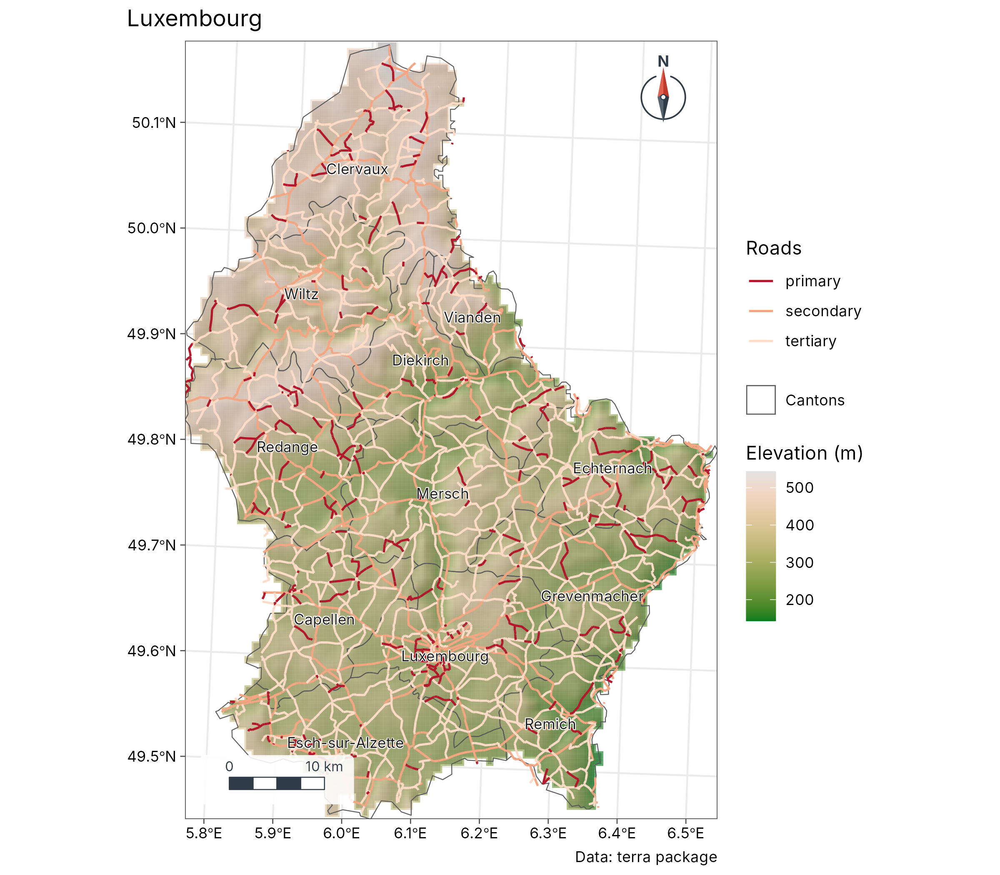
geo_map(title = "Luxembourg", caption = "Data: terra package") |>
map_raster(elev, name = "Elevation (m)", palette = "Terrain 2", hillshade = TRUE) |>
map_polygons(cantons, fill = NA, label = "Cantons") |>
map_lines(roads, colour = highway, palette = c("#B2182B", "#F4A582", "#FDDBC7"), group = "Roads") |>
map_labels(cantons, text = NAME_2)Standard symbols (presets)
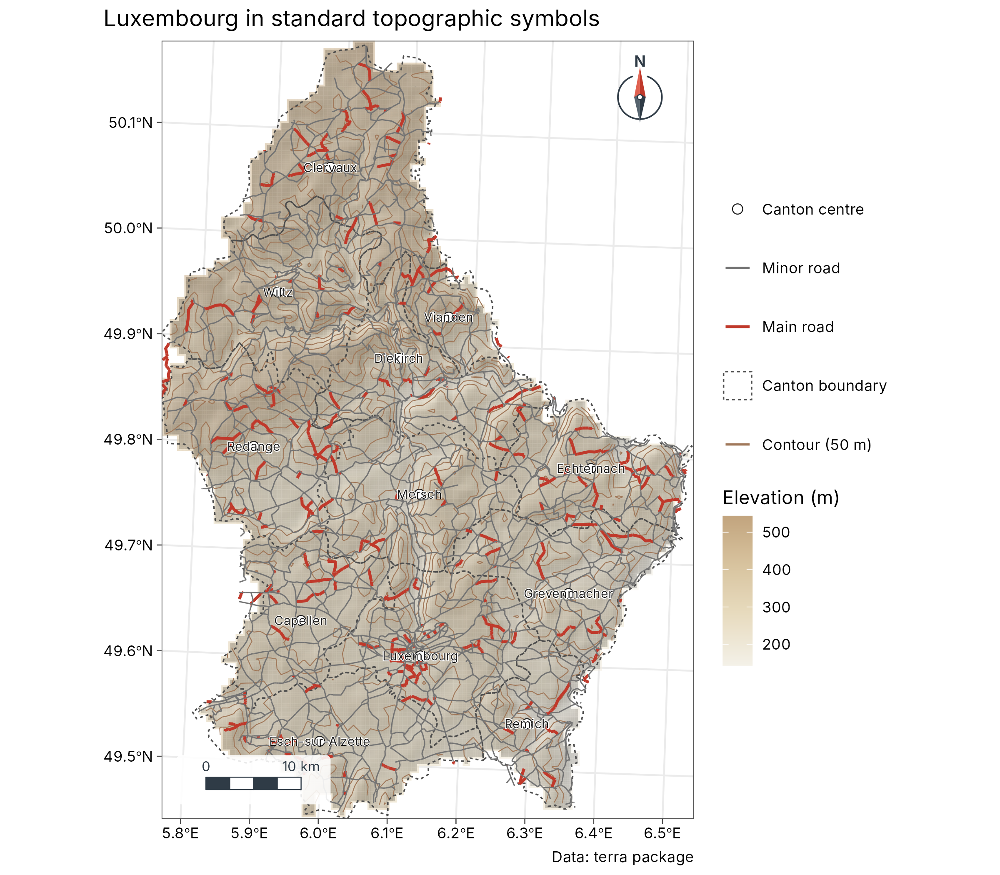
contours <- sf::st_as_sf(terra::as.contour(elev, levels = seq(200, 550, 50)))
geo_map(title = "Luxembourg in standard topographic symbols", caption = "Data: terra package") |>
map_raster(elev, name = "Elevation (m)", palette = c("#F4F1E8", "#E8DCC0", "#D9C5A0", "#C2A47E"), hillshade = TRUE, alpha = 0.55) |>
map_lines(contours, preset = "contour", label = "Contour (50 m)") |>
map_polygons(cantons, preset = "admin", label = "Canton boundary") |>
map_lines(roads[roads$highway == "primary", ], preset = "road_major") |>
map_lines(roads[roads$highway != "primary", ], preset = "road_minor") |>
map_points(seats, preset = "town", label = "Canton centre") |>
map_labels(seats, text = NAME_2, size = 2.6)Automatic world map
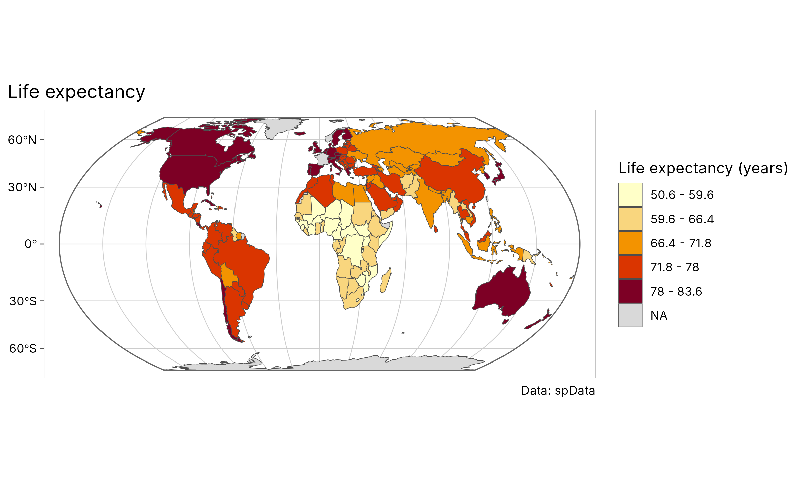
geo_automap(world, lifeExp, legend_title = "Life expectancy (years)") +
ggplot2::labs(title = "Life expectancy", caption = "Data: spData")Small multiples with one classification
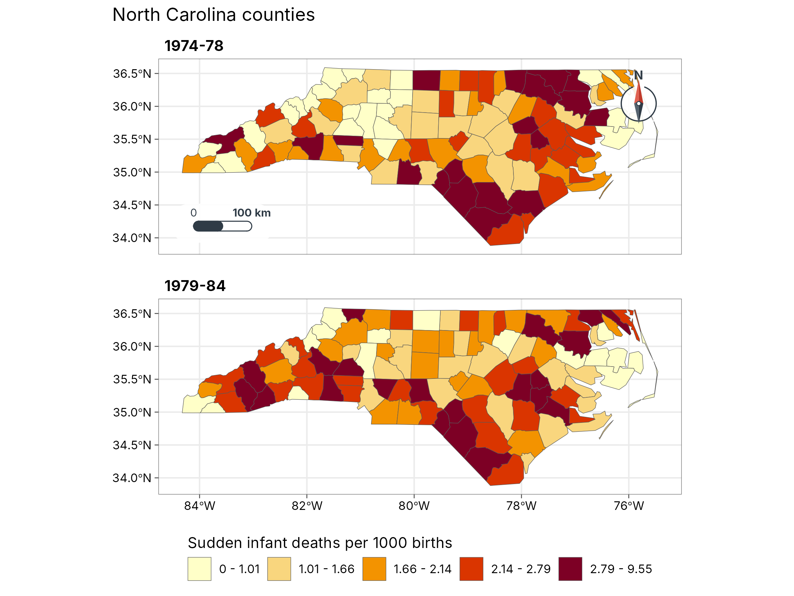
nc$`1974-78` <- 1000 * nc$SID74 / nc$BIR74
nc$`1979-84` <- 1000 * nc$SID79 / nc$BIR79
geo_facet_map(nc, c(`1974-78`, `1979-84`), n = 5, ncol = 1,
legend_title = "Sudden infant deaths per 1000 births", title = "North Carolina counties"
)Legend inside, locator inset
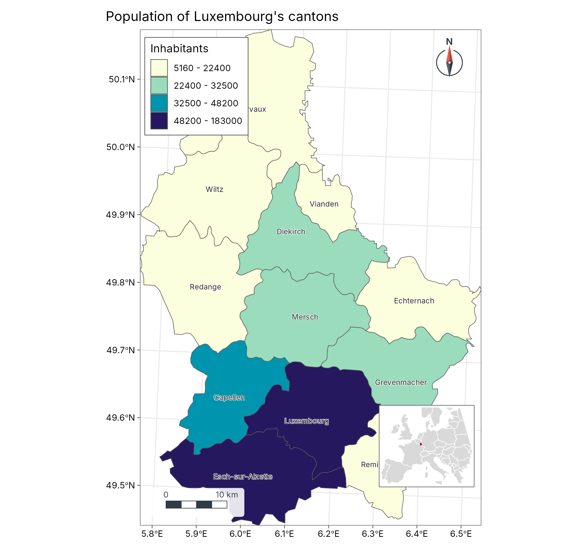
europe <- suppressWarnings(sf::st_crop(world[world$continent == "Europe", ], c(xmin = -11, ymin = 35, xmax = 30, ymax = 60)))
locator <- geo_map(scale_bar = FALSE, north_arrow = FALSE, legend = "none", crs = 3035) |>
map_polygons(europe, fill = "grey85", border = "white", label = "Europe") |>
map_polygons(sf::st_sf(geometry = sf::st_union(cantons)), fill = "#B2182B", border = "#B2182B", label = "Luxembourg")
main <- geo_map(title = "Population of Luxembourg's cantons", legend = "inside") |>
map_polygons(cantons, fill = POP, n = 4, group = "Inhabitants", palette = "YlGnBu") |>
map_labels(cantons, text = NAME_2, size = 2.6)
geo_inset(map_build(main), locator, size = 0.28)Zoom
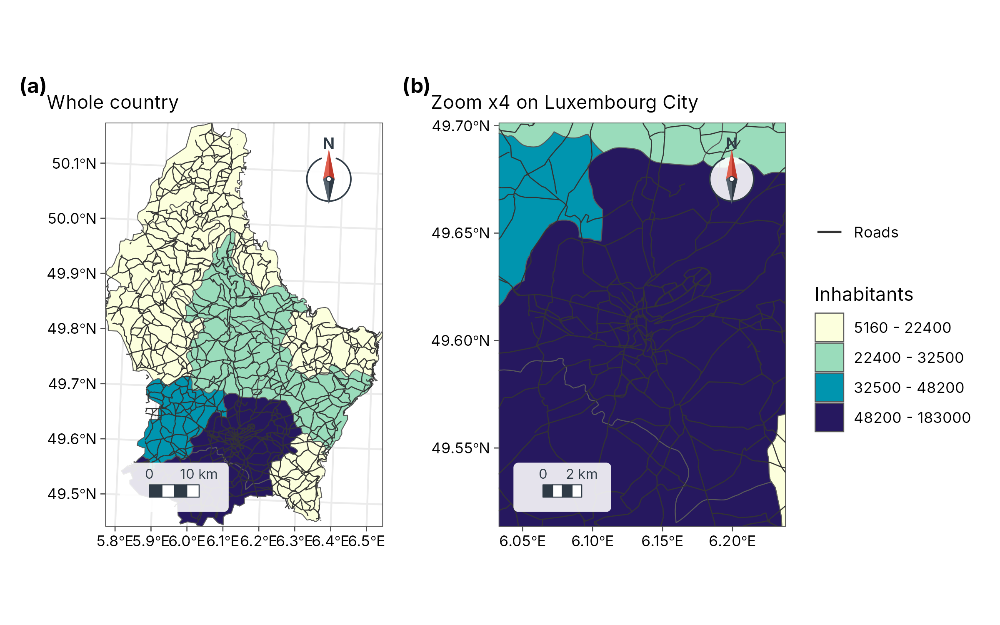
base <- geo_map(subtitle = "Whole country") |>
map_polygons(cantons, fill = POP, n = 4, group = "Inhabitants", palette = "YlGnBu") |>
map_lines(roads, colour = "grey20", label = "Roads", linewidth = 0.3)
zoomed <- base |> map_zoom(4, centre = c(6.13, 49.61))
zoomed$subtitle <- "Zoom x4 on Luxembourg City"
geo_panels(base, zoomed, ncol = 2, guides = "collect")Labels that follow the shape
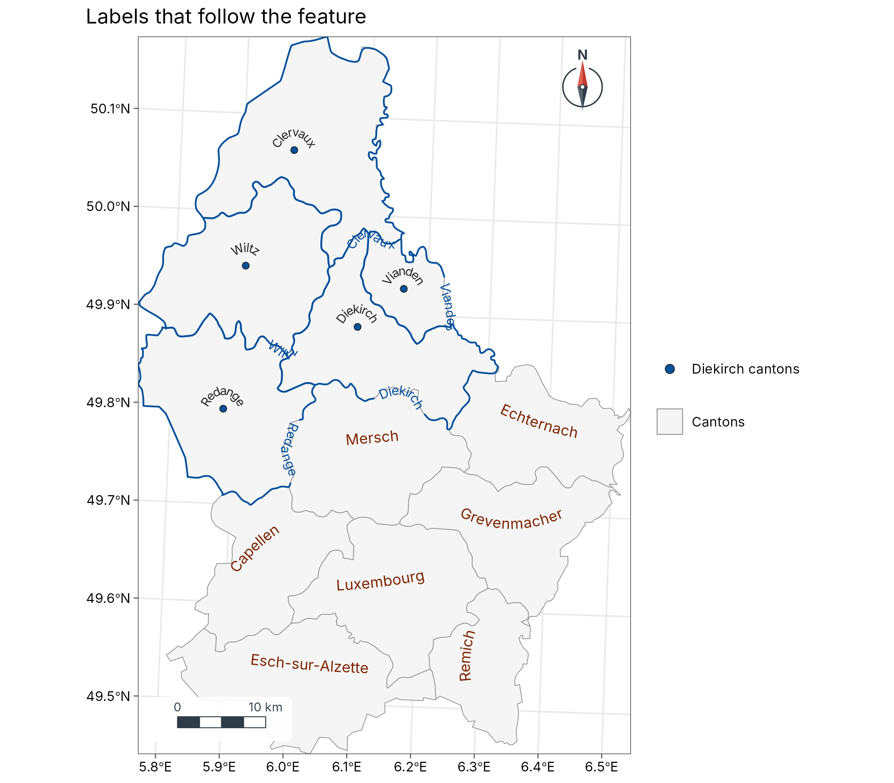
diekirch <- sf::st_cast(sf::st_boundary(cantons[cantons$NAME_1 == "Diekirch", ]), "MULTILINESTRING")
geo_map(title = "Labels that follow the feature") |>
map_polygons(cantons, fill = "grey96", border = "grey60", label = "Cantons") |>
map_curved_labels(cantons[cantons$NAME_1 != "Diekirch", ], text = NAME_2, size = 3.4, colour = "#7F2704") |>
map_curved_labels(diekirch, text = NAME_2, size = 3, colour = "#08519C", position = 0.35) |>
map_points(seats[seats$NAME_1 == "Diekirch", ], fill = "#08519C", label = "Diekirch cantons", size = 1.8) |>
map_curved_labels(seats[seats$NAME_1 == "Diekirch", ], text = NAME_2, size = 2.8)Labelled contours
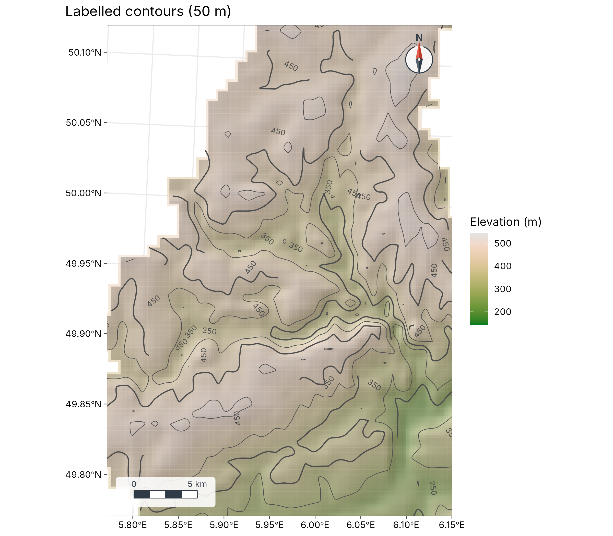
geo_map(title = "Labelled contours (50 m)") |>
map_raster(elev, name = "Elevation (m)", palette = "Terrain 2", hillshade = TRUE, alpha = 0.5) |>
map_contours(elev, interval = 50) |>
map_zoom(2.2, centre = c(5.95, 49.95))3D terrain
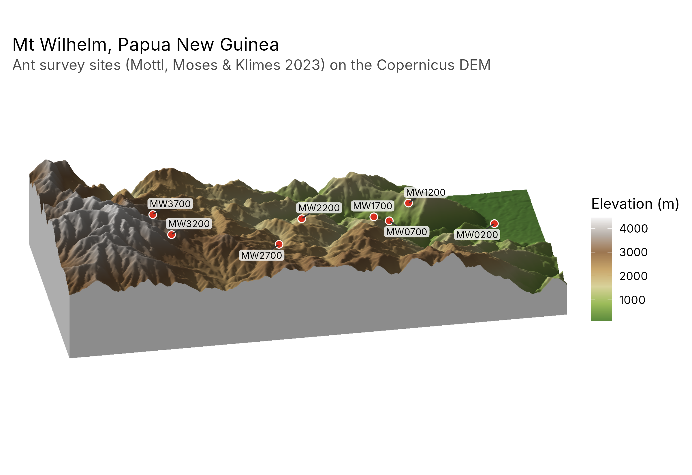
wilhelm <- terra::rast(system.file("extdata", "wilhelm-dem.tif", package = "tidymapr"))
ant_sites <- png_ants_sites[!duplicated(png_ants_sites$site), ] |>
sf::st_as_sf(coords = c("lon", "lat"), crs = 4326)
geo_map3d(wilhelm,
theta = 190, phi = 30, points = ant_sites, label = "site",
title = "Mt Wilhelm, Papua New Guinea",
subtitle = "Ant survey sites (Mottl, Moses & Klimes 2023) on the Copernicus DEM",
width = 1600, height = 1000
)Spectral indices and spectral diversity
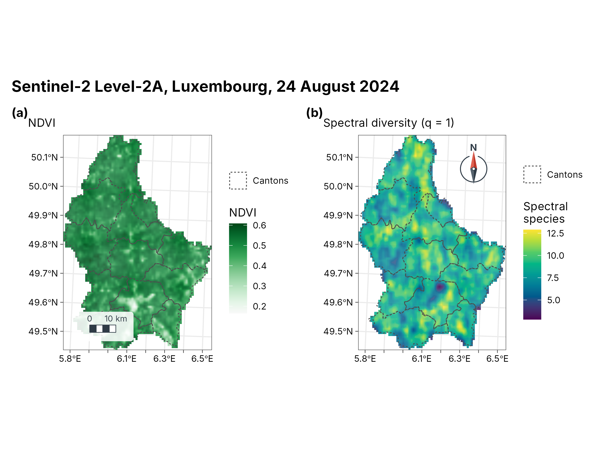
s2 <- terra::rast(system.file("ex/sent2_L2A_2024-08-24.tif", package = "terra"))
ndvi <- geo_spectral_index(s2, "NDVI")
set.seed(1)
sdiv <- geo_spectral_diversity(s2, window = 5, k = 15)
a <- geo_map(subtitle = "NDVI", north_arrow = FALSE) |>
map_raster(ndvi, name = "NDVI", palette = "Greens 3") |>
map_polygons(cantons, fill = NA, preset = "admin", label = "Cantons")
b <- geo_map(subtitle = "Spectral diversity (q = 1)", scale_bar = FALSE) |>
map_raster(sdiv[[1]], name = "Spectral\nspecies", palette = "viridis") |>
map_polygons(cantons, fill = NA, preset = "admin", label = "Cantons")
geo_panels(a, b, ncol = 2, guides = "keep", title = "Sentinel-2 Level-2A, Luxembourg, 24 August 2024")Point clusters (DBSCAN)
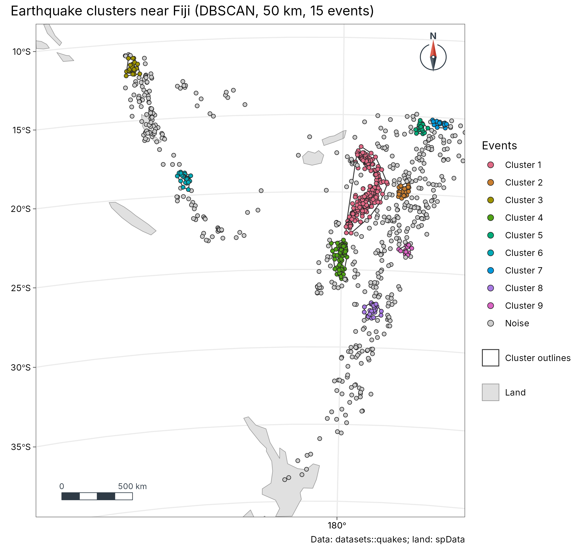
cl <- geo_dbscan(datasets::quakes, eps = 50000, min_pts = 15, lon = long, lat = lat)
cl$group <- factor(ifelse(cl$cluster == 0, "Noise", paste("Cluster", cl$cluster)),
levels = c(paste("Cluster", 1:9), "Noise")
)
land <- suppressWarnings(sf::st_crop(sf::st_shift_longitude(world), c(xmin = 160, ymin = -40, xmax = 190, ymax = -8)))
geo_map(
title = "Earthquake clusters near Fiji (DBSCAN, 50 km, 15 events)",
caption = "Data: datasets::quakes; land: spData",
crs = "+proj=laea +lat_0=-22 +lon_0=178 +datum=WGS84 +units=m"
) |>
map_polygons(land, fill = "grey88", border = "grey60", label = "Land") |>
map_polygons(attr(cl, "hulls"), fill = NA, border = "grey20", label = "Cluster outlines", linewidth = 0.4) |>
map_points(cl, fill = group, group = "Events", size = 1.6, palette = c(grDevices::hcl.colors(9, "Dark 3"), "grey80"))GeoSpaX recipe: kriging
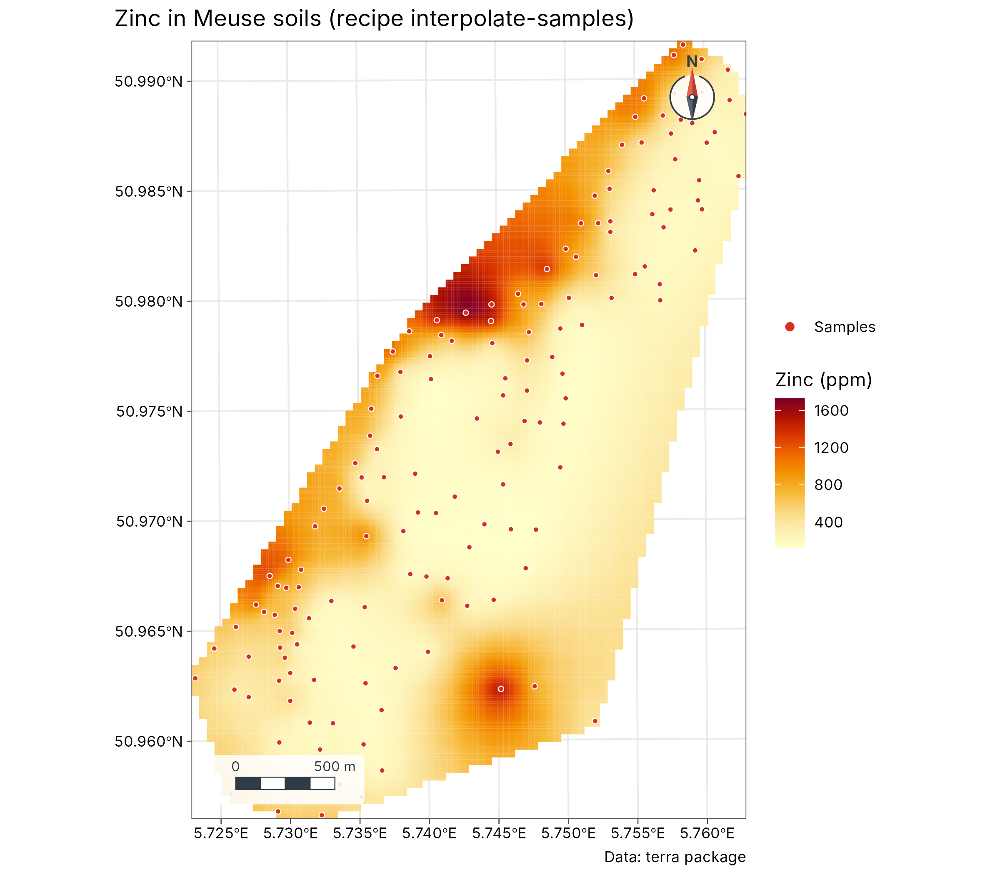
meuse <- terra::unwrap(readRDS(system.file("ex/meuse.rds", package = "terra")))
samples <- sf::st_as_sf(as.data.frame(meuse), coords = c("x", "y"), crs = 28992)
rec <- geo_recipe_read(system.file("recipes/interpolate-samples.yaml", package = "tidymapr"))
out <- geo_recipe_run(rec, inputs = list(layer = samples, field = "zinc"), dir = tempfile(), quiet = TRUE)
geo_map(title = "Zinc in Meuse soils (recipe interpolate-samples)", caption = "Data: terra package") |>
map_raster(out$surface$raster, name = "Zinc (ppm)", palette = "YlOrRd") |>
map_points(samples, preset = "sample_site", label = "Samples", size = 1.2)More
- Species distribution ensembles: sloth case study.
- Diversity surfaces with uncertainty: Barro Colorado Island case study.
- Interactive web maps:
geo_webmap(), shown at the end of the sloth case study.